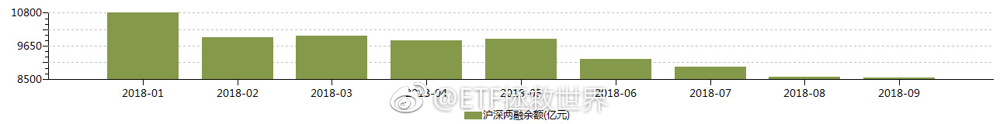
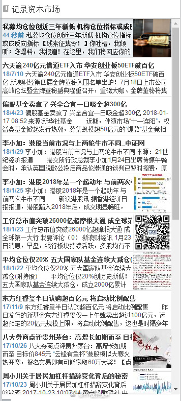
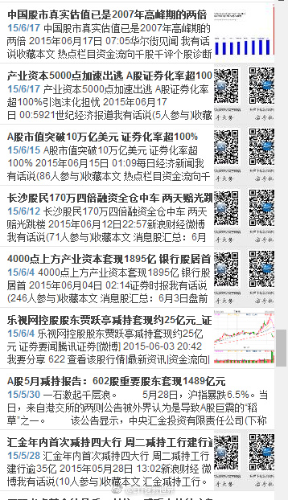
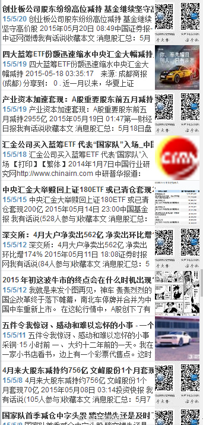

回复@LOOKING-In-your-eyes:我相信真正的超长线大资金现在一定是在布局。包括一部分外资，包括险资，其中就会有社保。就我这十几年对超级大机构的观察，几乎可以确定他们99%在干活。//@LOOKING-In-your-eyes:有消息说社保基金抄底了，是底部特征吗@ETF拯救世界:如果一会不反弹，今天pb在2-2.03之间了。
回复@爱探险的公伯千雁:1.5-2。A股钻石区域。我定义的。//@爱探险的公伯千雁:pb进入2以内，是不是就是进入钻石区域了？//@ETF拯救世界:高难度拉升——反弹一半，让你猜猜能不能进2.03。辣鸡操盘手……//@ETF拯救世界:然而，成年人的世界里没有如果。一秒都不差。@ETF拯救世界:如果一会不反弹，今天pb在2-2.03之间了。
穿越日期定错了！//@ETF拯救世界:回复@ETF拯救世界:今天周五。如果最后一小时没有逆转，基本上弱势很确定。节奏一定要控制好。//@ETF拯救世界:最近一定要控制节奏。不要太急，不要太激进。现在战场上战况混乱，先拿着手里的筹码认真观察一下。@ETF拯救世界:目前仓位很合适。稍微放缓发车节奏。等空间。
回复@ETF拯救世界:今天周五。如果最后一小时没有逆转，基本上弱势很确定。节奏一定要控制好。//@ETF拯救世界:最近一定要控制节奏。不要太急，不要太激进。现在战场上战况混乱，先拿着手里的筹码认真观察一下。@ETF拯救世界:目前仓位很合适。稍微放缓发车节奏。等空间。
回复@老高GG:目前A股自由流通市值18.5万亿。8500亿两融余额占比4.6%。2015年6月A股自由流通市值26.6万亿，2万亿两融余额占比7.5%，最高应该是超过8%。//@老高GG:@ETF拯救世界 如何把自由流通市值从流通市值里算出来？股票实在太多了//@ETF拯救世界:回复@老高GG:干货很多，目前已经说了将近1%了。@ETF拯救世界:1月，两融余额在11000亿，目前8500亿。仅此一项，趋势扭转后就能带来1500-2000亿资金。私募仓位30%，涨起来后又有几千亿资金。公募机构以及你的亲戚朋友都是低仓位，或者已经离开股市。市场缺的并不是资金。 
回复@老高GG:干货很多，目前已经说了将近1%了。//@老高GG:又上干货了 笔记本记录下来//@ETF拯救世界:回复@hongapplenju:代表自由流通的市值里，有多少市值是被杠杆资金操控。杠杆资金比例越大，闪崩的风险越大。2015年5，A股杠杆资金比例全世界股市最高。比第二名高很多很多。@ETF拯救世界:1月，两融余额在11000亿，目前8500亿。仅此一项，趋势扭转后就能带来1500-2000亿资金。私募仓位30%，涨起来后又有几千亿资金。公募机构以及你的亲戚朋友都是低仓位，或者已经离开股市。市场缺的并不是资金。
回复@my_skying:不一样。举例，中石油集团持有的中石油股票是可流通的流通市值。但实际上它不会卖，所以不是自由流通市值。//@my_skying:自由流通和流通不一样吗，有没有课代表解释下@ETF拯救世界:1月，两融余额在11000亿，目前8500亿。仅此一项，趋势扭转后就能带来1500-2000亿资金。私募仓位30%，涨起来后又有几千亿资金。公募机构以及你的亲戚朋友都是低仓位，或者已经离开股市。市场缺的并不是资金。
回复@hongapplenju:代表自由流通的市值里，有多少市值是被杠杆资金操控。杠杆资金比例越大，闪崩的风险越大。2015年5，A股杠杆资金比例全世界股市最高。比第二名高很多很多。//@hongapplenju:融资余额/自由流通总市值这个值，代表的是，入场意愿开启之后的拉升能力？@ETF拯救世界:1月，两融余额在11000亿，目前8500亿。仅此一项，趋势扭转后就能带来1500-2000亿资金。私募仓位30%，涨起来后又有几千亿资金。公募机构以及你的亲戚朋友都是低仓位，或者已经离开股市。市场缺的并不是资金。
回复@老顾例外:我只看融资余额/自由流通总市值（不是流通市值）。我这里有过去7年所有的比例数据。至于m2，房价，股市总市值，参考意义不大。//@老顾例外:两融是个绝对量， 要结合M2，房价总市值， 和股市总市值来看。 百分比更有意义@ETF拯救世界:1月，两融余额在11000亿，目前8500亿。仅此一项，趋势扭转后就能带来1500-2000亿资金。私募仓位30%，涨起来后又有几千亿资金。公募机构以及你的亲戚朋友都是低仓位，或者已经离开股市。市场缺的并不是资金。
回复@因为迷茫所以仰望星空:两融余额历史上2014年9月首次突破6000亿，至今从未跌破。2015年5-6月最高峰突破2万亿。//@因为迷茫所以仰望星空:两融余额会不会跌破6000亿呢@ETF拯救世界:1月，两融余额在11000亿，目前8500亿。仅此一项，趋势扭转后就能带来1500-2000亿资金。私募仓位30%，涨起来后又有几千亿资金。公募机构以及你的亲戚朋友都是低仓位，或者已经离开股市。市场缺的并不是资金。
1月，两融余额在11000亿，目前8500亿。仅此一项，趋势扭转后就能带来1500-2000亿资金。私募仓位30%，涨起来后又有几千亿资金。公募机构以及你的亲戚朋友都是低仓位，或者已经离开股市。市场缺的并不是资金。
回复@观音山上拜观音:那条新闻是2014年的。我是2015年收录。//@观音山上拜观音:15/5/18汇金买入蓝筹ETF，那时候不是应该卖出吗？@ETF拯救世界:给你们看看我今年收集的，我觉得有意义的新闻。附赠2015年的。有价值的东西都在公开信息里，看你能不能识别了。 
1月：李小加：港股牛市开始，与07年不同。四天后恒指见大顶。1月，GJD大幅减仓，仓位降到20%。A股见大顶，至今下跌25%。1月，合宜一天吸金300亿。目前净值0.83。@ETF拯救世界:给你们看看我今年收集的，我觉得有意义的新闻。附赠2015年的。有价值的东西都在公开信息里，看你能不能识别了。
这是今天我收藏进资本市场日记的第一条新闻。@全景网:【私募平均仓位创近三年新低 机构仓位指标或成反向指标】私募排排网的最新统计数据显示，私募当前的平均仓位为52.61%，其中34.23%的私募处于半仓以下，私募的平均仓位处于近3年的最低水平。据了解，私募群体减仓观望情绪浓重，61.26%的基金经理表示会维持现有仓位不变。从连续的统计数据来看，机构仓位指标往往是一种反向指标。当人声鼎沸参与者众多、貌似安全时，反而酝酿着下行风险；但当人气低迷悲观弥漫、貌似危险时，反而容易迎来行情向上的机会。（上海证券报）
今天会不会继续新低。//@ETF拯救世界:继续新低。老这么跌也不是事儿，还不反弹反弹换换手？//@ETF拯救世界:继续新低@ETF拯救世界:腾讯，60倍PE。未来五年看，真的能有特别好的收益率吗。学习了。
刚才认真看了看，美股账户资产占金融资产一个多不到两个点。其中一半是美元现金，一半权益里面大部分是各国ETF。其它是美股港股。包括京东网易AMD再生元四只股票。 感谢 外 管 局和纽约花旗，美元汇不出去救了我……